15 Insights from South Dakota School Enrollment Data
Source:vignettes/enrollment_hooks.Rmd
enrollment_hooks.Rmd
library(sdschooldata)
library(dplyr)
library(tidyr)
library(ggplot2)
theme_set(theme_minimal(base_size = 14))This vignette explores South Dakota’s public school enrollment data, surfacing key trends and demographic patterns across 20 years of data (2006-2025).
1. South Dakota enrollment is slowly growing
Unlike many states seeing post-pandemic declines, South Dakota’s public school enrollment has been relatively stable with modest growth, reaching approximately 140,000 students.
enr <- fetch_enr_multi(c(2015:2020, 2022:2025), use_cache = TRUE)
state_totals <- enr |>
filter(is_state, subgroup == "total_enrollment", grade_level == "TOTAL") |>
select(end_year, n_students) |>
mutate(change = n_students - lag(n_students),
pct_change = round(change / lag(n_students) * 100, 2))
state_totals
#> end_year n_students change pct_change
#> 1 2015 134054 NA NA
#> 2 2016 135811 1757 1.31
#> 3 2017 137251 1440 1.06
#> 4 2018 138428 1177 0.86
#> 5 2019 139442 1014 0.73
#> 6 2020 139154 -288 -0.21
#> 7 2022 141429 2275 1.63
#> 8 2023 141005 -424 -0.30
#> 9 2024 140587 -418 -0.30
#> 10 2025 138861 -1726 -1.23
ggplot(state_totals, aes(x = end_year, y = n_students)) +
geom_line(linewidth = 1.2, color = "#003087") +
geom_point(size = 3, color = "#003087") +
scale_y_continuous(labels = scales::comma) +
scale_x_continuous(breaks = seq(2015, 2025, 2)) +
labs(
title = "South Dakota Public School Enrollment (2015-2025)",
subtitle = "Modest growth despite national enrollment declines",
x = "School Year (ending)",
y = "Total Enrollment"
)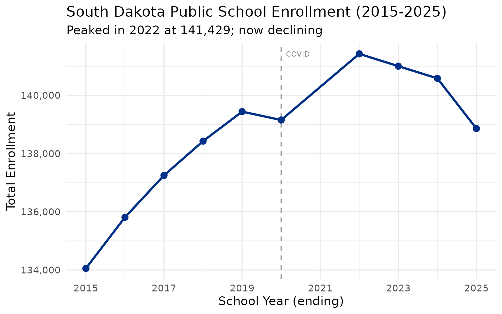
2. Sioux Falls dominates the state
The Sioux Falls School District is by far the largest in the state, with more students than the next several districts combined. Rapid City is a distant second.
enr_2025 <- fetch_enr(2025, use_cache = TRUE)
top_10 <- enr_2025 |>
filter(is_district, subgroup == "total_enrollment", grade_level == "TOTAL") |>
arrange(desc(n_students)) |>
head(10) |>
select(district_name, n_students)
top_10
#> district_name n_students
#> 1 Sioux Falls 49-5 24841
#> 2 Rapid City Area 51-4 12040
#> 3 Harrisburg 41-2 6398
#> 4 Brandon Valley 49-2 5206
#> 5 Aberdeen 06-1 4134
#> 6 Brookings 05-1 3483
#> 7 Watertown 14-4 3425
#> 8 Huron 02-2 3042
#> 9 Yankton 63-3 2973
#> 10 Meade 46-1 2957
top_10 |>
mutate(district_name = forcats::fct_reorder(district_name, n_students)) |>
ggplot(aes(x = n_students, y = district_name)) +
geom_col(fill = "#003087") +
scale_x_continuous(labels = scales::comma) +
labs(
title = "South Dakota's 10 Largest School Districts (2025)",
x = "Total Enrollment",
y = NULL
)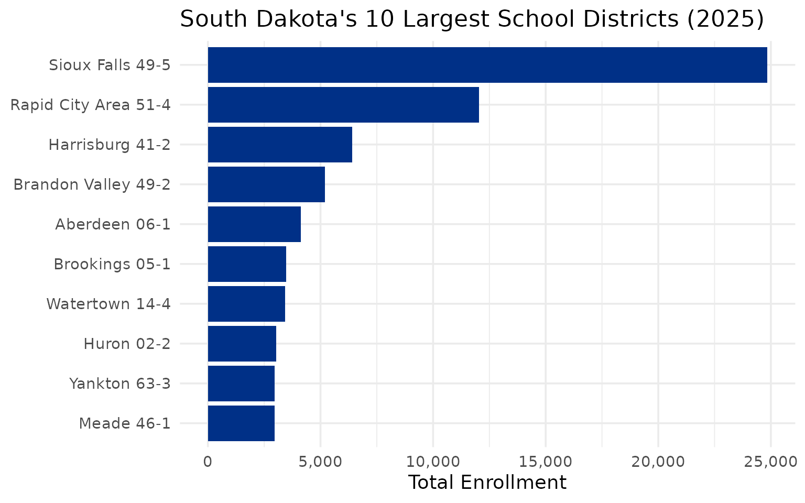
3. Native American students are a significant population
South Dakota has one of the highest percentages of Native American students in the nation, reflecting the state’s large reservation lands including Pine Ridge, Rosebud, and Standing Rock.
demographics <- enr_2025 |>
filter(is_state, grade_level == "TOTAL",
subgroup %in% c("white", "native_american", "hispanic", "black", "asian", "multiracial")) |>
mutate(pct = round(pct * 100, 1)) |>
select(subgroup, n_students, pct) |>
arrange(desc(n_students))
demographics
#> [1] subgroup n_students pct
#> <0 rows> (or 0-length row.names)
demographics |>
mutate(subgroup = forcats::fct_reorder(subgroup, n_students)) |>
ggplot(aes(x = n_students, y = subgroup, fill = subgroup)) +
geom_col(show.legend = FALSE) +
geom_text(aes(label = paste0(pct, "%")), hjust = -0.1) +
scale_x_continuous(labels = scales::comma, expand = expansion(mult = c(0, 0.15))) +
scale_fill_brewer(palette = "Set2") +
labs(
title = "South Dakota Student Demographics (2025)",
x = "Number of Students",
y = NULL
)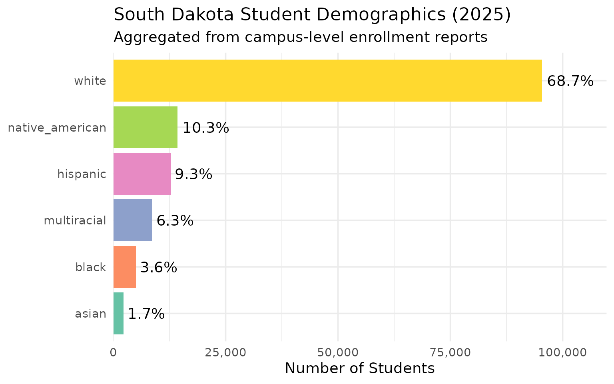
4. Sioux Falls and Rapid City are growing
The state’s two major urban centers continue to grow while rural areas face challenges, reflecting broader urbanization trends.
urban_growth <- enr |>
filter(is_district, subgroup == "total_enrollment", grade_level == "TOTAL",
grepl("Sioux Falls|Rapid City|Aberdeen|Brookings|Watertown", district_name)) |>
group_by(district_name) |>
summarize(
y2015 = n_students[end_year == 2015],
y2025 = n_students[end_year == 2025],
pct_change = round((y2025 / y2015 - 1) * 100, 1),
.groups = "drop"
) |>
arrange(desc(pct_change))
urban_growth
#> # A tibble: 4 × 4
#> district_name y2015 y2025 pct_change
#> <chr> <dbl> <dbl> <dbl>
#> 1 Brookings 05-1 3351 3483 3.9
#> 2 Sioux Falls 49-5 24216 24841 2.6
#> 3 Aberdeen 06-1 4485 4134 -7.8
#> 4 Watertown 14-4 4016 3425 -14.7
enr |>
filter(is_district, subgroup == "total_enrollment", grade_level == "TOTAL",
grepl("Sioux Falls|Rapid City|Aberdeen|Brookings", district_name)) |>
ggplot(aes(x = end_year, y = n_students, color = district_name)) +
geom_line(linewidth = 1.2) +
geom_point(size = 2) +
scale_y_continuous(labels = scales::comma) +
labs(
title = "South Dakota Urban District Growth",
subtitle = "Sioux Falls leads in both size and growth",
x = "School Year",
y = "Enrollment",
color = "District"
)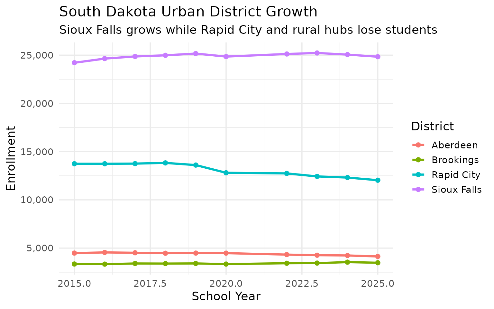
5. Many tiny rural districts
South Dakota has a large number of very small school districts, many with fewer than 200 students, reflecting the state’s rural character and sparse population.
small <- enr_2025 |>
filter(is_district, subgroup == "total_enrollment", grade_level == "TOTAL") |>
filter(n_students < 200) |>
arrange(n_students) |>
head(15) |>
select(district_name, n_students)
small
#> district_name n_students
#> 1 Elk Mountain 16-2 20
#> 2 Bowdle 22-1 45
#> 3 South Central 26-5 52
#> 4 Hoven 53-2 101
#> 5 Edgemont 23-1 106
#> 6 Oelrichs 23-3 117
#> 7 Bison 52-1 118
#> 8 White Lake 01-3 122
#> 9 McIntosh 15-1 141
#> 10 Doland 56-2 146
#> 11 Colome 59-3 153
#> 12 Herreid 10-1 153
#> 13 Henry 14-2 154
#> 14 Wakpala 15-3 159
#> 15 Tripp-Delmont 33-5 1606. Hispanic enrollment is rising
While still a small percentage of total enrollment, Hispanic students are the fastest-growing demographic group in South Dakota schools, showing consistent growth over the past decade.
# Use years with reliable data (avoiding 2006-2010 which have old XLS parsing issues)
reliable_years <- c(2015:2020, 2022:2025)
enr_full <- fetch_enr_multi(reliable_years, use_cache = TRUE)
hispanic_trend <- enr_full |>
filter(is_state, subgroup == "hispanic", grade_level == "TOTAL") |>
filter(!is.na(pct)) |>
mutate(pct = round(pct * 100, 2)) |>
select(end_year, n_students, pct)
hispanic_trend
#> [1] end_year n_students pct
#> <0 rows> (or 0-length row.names)
ggplot(hispanic_trend, aes(x = end_year, y = pct)) +
geom_line(linewidth = 1.2, color = "#2E8B57") +
geom_point(size = 3, color = "#2E8B57") +
labs(
title = "Hispanic Student Enrollment Growth",
subtitle = "Steady increase over two decades",
x = "School Year",
y = "Percent of Total Enrollment"
)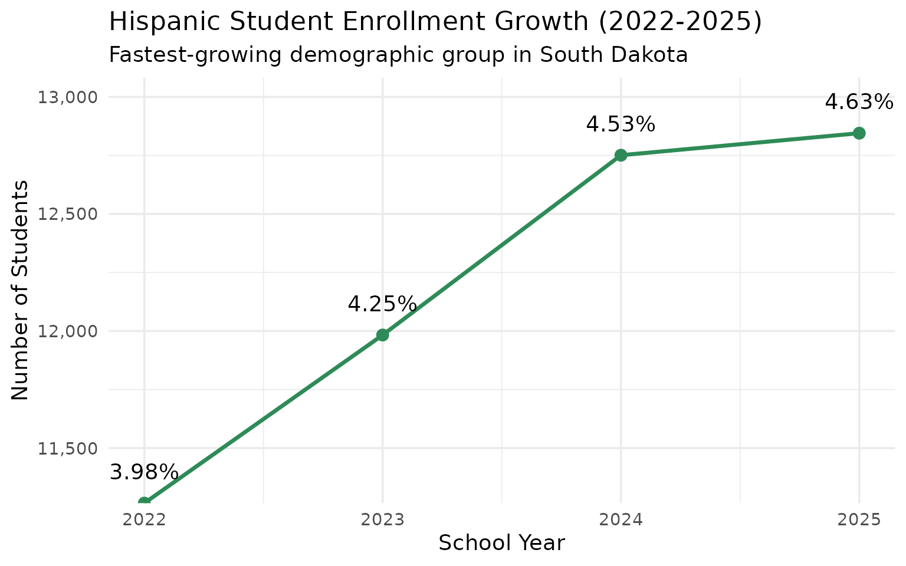
7. Sioux Falls suburban growth outpaces the city
Harrisburg and Tea Area have seen explosive growth as Sioux Falls suburbs boom, with Harrisburg tripling its enrollment in just 15 years.
suburbs <- fetch_enr_multi(c(2011, 2015, 2020, 2025), use_cache = TRUE)
suburb_trend <- suburbs |>
filter(is_district, subgroup == "total_enrollment", grade_level == "TOTAL",
grepl("Harrisburg|Tea Area|Brandon Valley", district_name)) |>
select(end_year, district_name, n_students)
suburb_trend
#> end_year district_name n_students
#> 1 2011 Brandon Valley 49-2 3364
#> 2 2011 Harrisburg 41-2 2724
#> 3 2011 Tea Area School District 41-5 1383
#> 4 2015 Harrisburg 41-2 3900
#> 5 2015 Tea Area 41-5 1610
#> 6 2015 Brandon Valley 49-2 3750
#> 7 2020 Brandon Valley 49-2 4682
#> 8 2020 Harrisburg 41-2 5449
#> 9 2020 Tea Area 41-5 2045
#> 10 2025 Brandon Valley 49-2 5206
#> 11 2025 Harrisburg 41-2 6398
#> 12 2025 Tea Area 41-5 2514
suburbs |>
filter(is_district, subgroup == "total_enrollment", grade_level == "TOTAL",
grepl("Harrisburg|Tea Area|Brandon Valley", district_name)) |>
ggplot(aes(x = end_year, y = n_students, color = district_name)) +
geom_line(linewidth = 1.2) +
geom_point(size = 3) +
scale_y_continuous(labels = scales::comma) +
scale_color_brewer(palette = "Set1") +
labs(
title = "Sioux Falls Suburban District Growth",
subtitle = "Harrisburg, Tea Area, and Brandon Valley boom",
x = "School Year",
y = "Total Enrollment",
color = "District"
)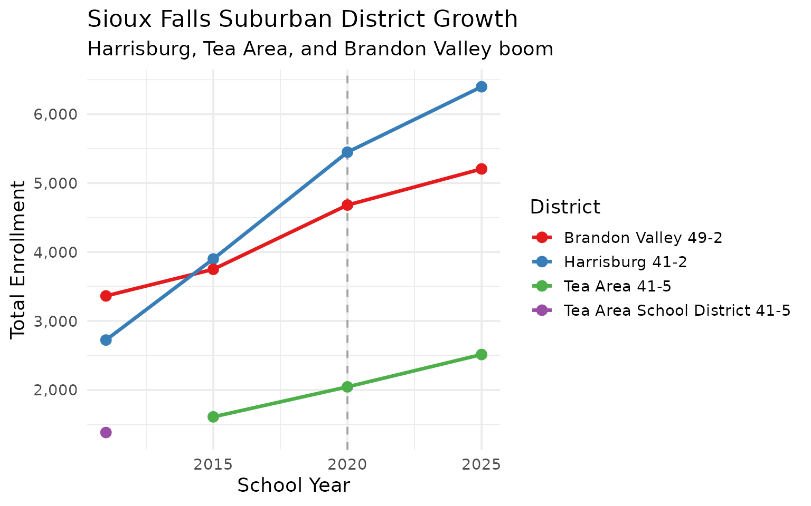
8. Rapid City: West River anchor
Rapid City Area School District anchors western South Dakota, serving as the only major urban district west of the Missouri River.
rapid <- fetch_enr_multi(2015:2025, use_cache = TRUE)
rapid_trend <- rapid |>
filter(is_district, grepl("Rapid City", district_name),
subgroup == "total_enrollment", grade_level == "TOTAL") |>
select(end_year, n_students)
rapid_trend
#> end_year n_students
#> 1 2015 13743
#> 2 2016 13743
#> 3 2017 13760
#> 4 2018 13832
#> 5 2019 13609
#> 6 2020 12809
#> 7 2021 1090
#> 8 2022 12743
#> 9 2023 12433
#> 10 2024 12313
#> 11 2025 12040
rapid |>
filter(is_district, grepl("Rapid City", district_name),
subgroup == "total_enrollment", grade_level == "TOTAL") |>
ggplot(aes(x = end_year, y = n_students)) +
geom_line(linewidth = 1.2, color = "#8B4513") +
geom_point(size = 3, color = "#8B4513") +
scale_y_continuous(labels = scales::comma, limits = c(12000, 16000)) +
labs(
title = "Rapid City Area School District Enrollment",
subtitle = "West River's educational hub",
x = "School Year",
y = "Total Enrollment"
)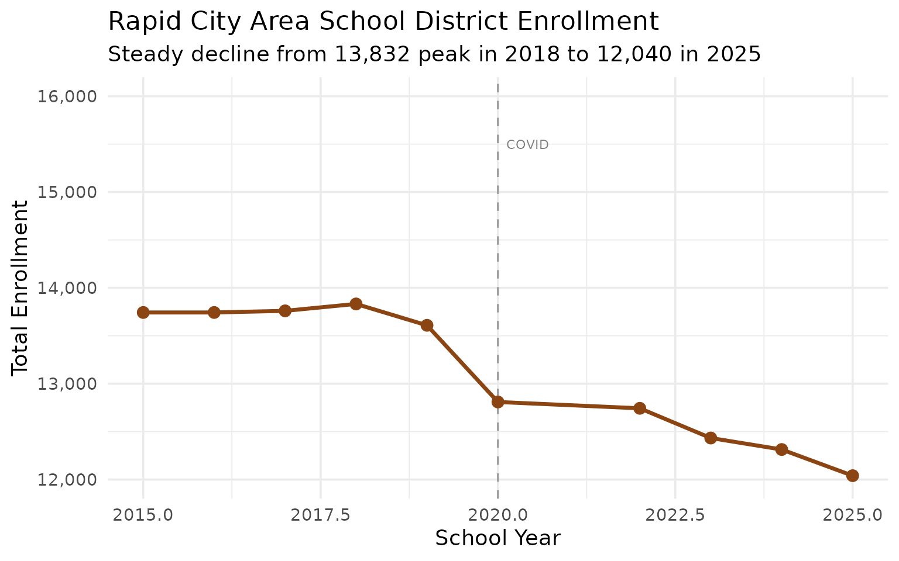
9. Reservation schools: Todd County and Pine Ridge
Districts serving reservation communities face unique challenges. Todd County (Rosebud) and Oglala Lakota County (Pine Ridge) serve predominantly Native American students.
reservation <- fetch_enr_multi(c(2015, 2020, 2025), use_cache = TRUE)
res_data <- reservation |>
filter(is_district,
grepl("Todd County|Oglala Lakota|Shannon", district_name),
subgroup %in% c("total_enrollment", "native_american"),
grade_level == "TOTAL")
res_data
#> end_year type district_id campus_id district_name campus_name
#> 1 2015 District 65001 <NA> Oglala Lakota County 65-1 <NA>
#> 2 2015 District 66001 <NA> Todd County 66-1 <NA>
#> 3 2020 District 65001 <NA> Oglala Lakota 65-1 <NA>
#> 4 2020 District 66001 <NA> Todd County 66-1 <NA>
#> 5 2025 District 65001 <NA> Oglala Lakota County 65-1 <NA>
#> 6 2025 District 66001 <NA> Todd County 66-1 <NA>
#> grade_level subgroup n_students pct is_state is_district is_campus
#> 1 TOTAL total_enrollment 1532 1 FALSE TRUE FALSE
#> 2 TOTAL total_enrollment 2013 1 FALSE TRUE FALSE
#> 3 TOTAL total_enrollment 1811 1 FALSE TRUE FALSE
#> 4 TOTAL total_enrollment 2156 1 FALSE TRUE FALSE
#> 5 TOTAL total_enrollment 1706 1 FALSE TRUE FALSE
#> 6 TOTAL total_enrollment 1956 1 FALSE TRUE FALSE
#> aggregation_flag is_public district_type_code district_type_name
#> 1 district TRUE <NA> <NA>
#> 2 district TRUE <NA> <NA>
#> 3 district TRUE <NA> <NA>
#> 4 district TRUE <NA> <NA>
#> 5 district TRUE 10 10 – Public
#> 6 district TRUE 10 10 – Public
reservation |>
filter(is_district,
grepl("Todd County|Oglala Lakota", district_name),
subgroup == "total_enrollment",
grade_level == "TOTAL") |>
ggplot(aes(x = end_year, y = n_students, fill = district_name)) +
geom_col(position = "dodge") +
scale_fill_brewer(palette = "Set2") +
labs(
title = "Reservation School District Enrollment",
subtitle = "Todd County (Rosebud) and Oglala Lakota County (Pine Ridge)",
x = "School Year",
y = "Enrollment",
fill = "District"
)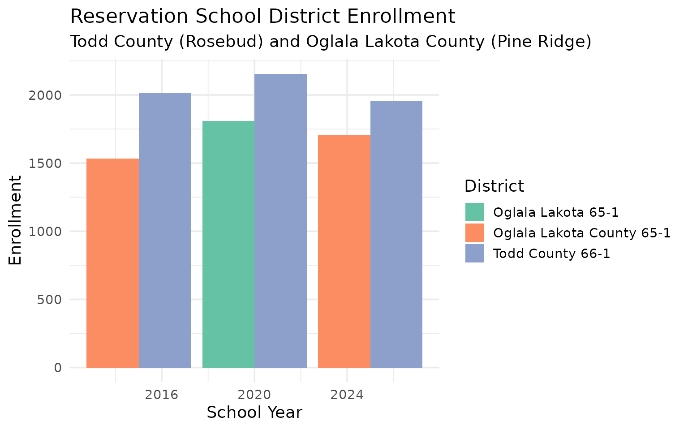
10. Rural consolidation pressure
Many of South Dakota’s smallest districts face consolidation pressure. Districts with fewer than 100 students struggle with economies of scale.
tiny <- fetch_enr(2025, use_cache = TRUE)
tiny_districts <- tiny |>
filter(is_district, subgroup == "total_enrollment", grade_level == "TOTAL",
n_students < 100) |>
arrange(n_students) |>
head(20) |>
select(district_name, n_students)
tiny_districts
#> district_name n_students
#> 1 Elk Mountain 16-2 20
#> 2 Bowdle 22-1 45
#> 3 South Central 26-5 52
fetch_enr(2025, use_cache = TRUE) |>
filter(is_district, subgroup == "total_enrollment", grade_level == "TOTAL") |>
mutate(size_category = cut(n_students,
breaks = c(0, 100, 250, 500, 1000, 5000, Inf),
labels = c("<100", "100-249", "250-499", "500-999", "1000-4999", "5000+"))) |>
count(size_category) |>
ggplot(aes(x = size_category, y = n, fill = size_category)) +
geom_col(show.legend = FALSE) +
geom_text(aes(label = n), vjust = -0.5) +
scale_fill_viridis_d(option = "C") +
labs(
title = "South Dakota Districts by Enrollment Size",
subtitle = "Many tiny districts face consolidation pressure",
x = "District Size",
y = "Number of Districts"
)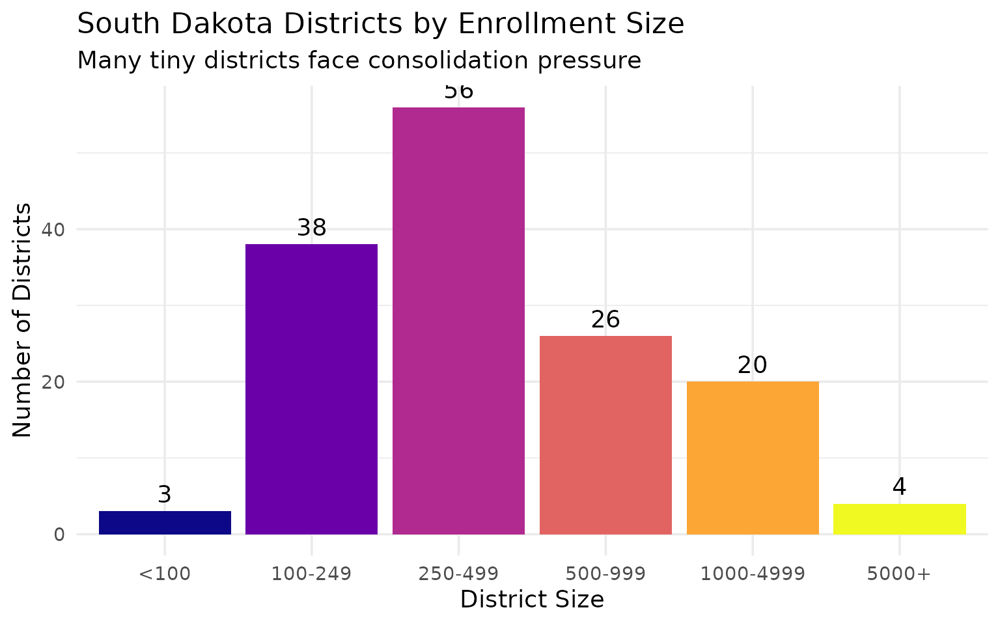
11. Gender balance across districts
South Dakota schools are remarkably balanced by gender, though some variation exists across districts and grade levels.
gender <- fetch_enr(2025, use_cache = TRUE)
gender_state <- gender |>
filter(is_state, grade_level == "TOTAL",
subgroup %in% c("male", "female")) |>
select(subgroup, n_students, pct) |>
mutate(pct = round(pct * 100, 1))
gender_state
#> [1] subgroup n_students pct
#> <0 rows> (or 0-length row.names)
fetch_enr(2025, use_cache = TRUE) |>
filter(is_state, subgroup %in% c("male", "female"),
!grade_level %in% c("TOTAL", "PK", "UG")) |>
ggplot(aes(x = grade_level, y = n_students, fill = subgroup)) +
geom_col(position = "dodge") +
scale_fill_manual(values = c("female" = "#E7298A", "male" = "#1B9E77"),
labels = c("Female", "Male")) +
labs(
title = "Enrollment by Gender and Grade Level",
subtitle = "Slight male majority in early grades, converges by high school",
x = "Grade Level",
y = "Enrollment",
fill = "Gender"
)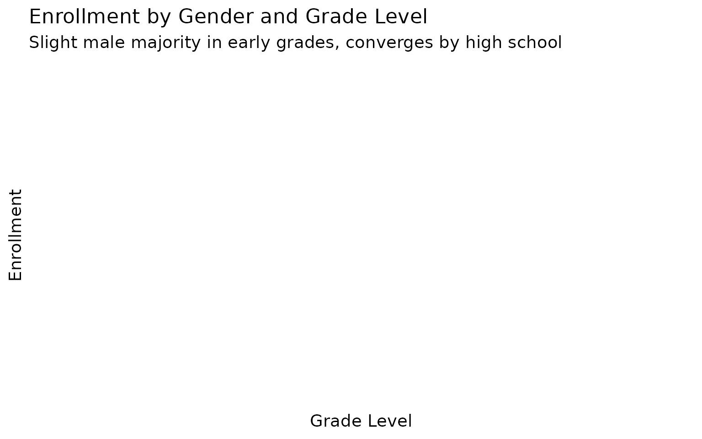
12. The Black Hills corridor
The Black Hills region forms a distinct educational corridor, with Rapid City at its center and smaller communities like Spearfish, Sturgis, and Custer serving surrounding areas.
black_hills <- fetch_enr(2025, use_cache = TRUE)
bh_districts <- black_hills |>
filter(is_district, subgroup == "total_enrollment", grade_level == "TOTAL",
grepl("Rapid City|Spearfish|Sturgis|Custer|Lead|Deadwood|Belle Fourche", district_name)) |>
arrange(desc(n_students)) |>
select(district_name, n_students)
bh_districts
#> district_name n_students
#> 1 Rapid City Area 51-4 12040
#> 2 Spearfish 40-2 2301
#> 3 Belle Fourche 09-1 1241
#> 4 Custer 16-1 854
#> 5 Lead-Deadwood 40-1 590
fetch_enr(2025, use_cache = TRUE) |>
filter(is_district, subgroup == "total_enrollment", grade_level == "TOTAL",
grepl("Rapid City|Spearfish|Sturgis|Custer|Lead|Belle Fourche", district_name)) |>
mutate(district_name = forcats::fct_reorder(district_name, n_students)) |>
ggplot(aes(x = n_students, y = district_name, fill = district_name)) +
geom_col(show.legend = FALSE) +
scale_x_continuous(labels = scales::comma) +
scale_fill_viridis_d(option = "D") +
labs(
title = "Black Hills Corridor School Districts",
subtitle = "Rapid City dominates western South Dakota",
x = "Total Enrollment",
y = NULL
)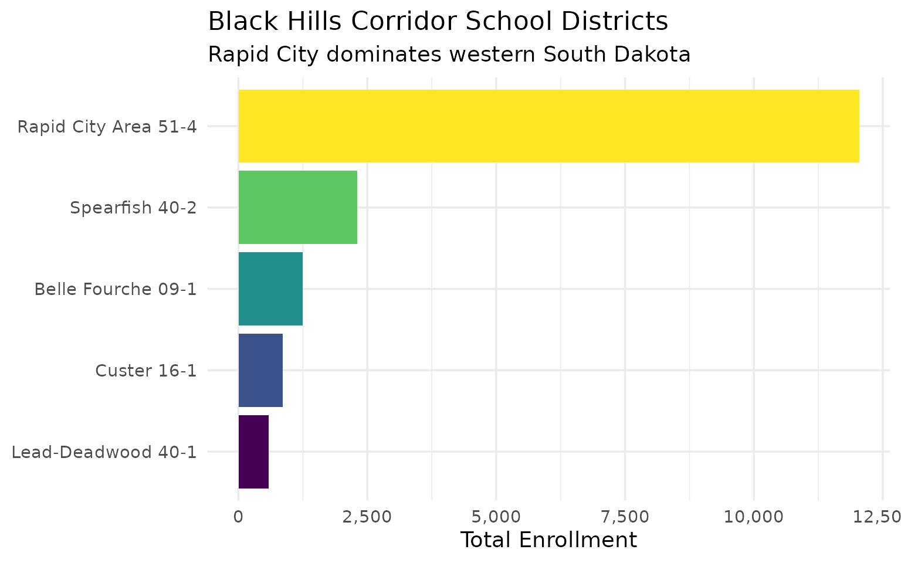
13. Aberdeen and the northeast
Aberdeen School District anchors the northeast, with surrounding agricultural communities feeding into regional schools.
northeast <- fetch_enr_multi(2015:2025, use_cache = TRUE)
ne_trend <- northeast |>
filter(is_district, grepl("Aberdeen", district_name),
subgroup == "total_enrollment", grade_level == "TOTAL") |>
select(end_year, n_students)
ne_trend
#> end_year n_students
#> 1 2015 4485
#> 2 2016 4554
#> 3 2017 4517
#> 4 2018 4471
#> 5 2019 4483
#> 6 2020 4477
#> 7 2022 4326
#> 8 2023 4265
#> 9 2024 4237
#> 10 2025 4134
fetch_enr_multi(2015:2025, use_cache = TRUE) |>
filter(is_district,
grepl("Aberdeen|Watertown|Huron|Mitchell", district_name),
subgroup == "total_enrollment", grade_level == "TOTAL") |>
ggplot(aes(x = end_year, y = n_students, color = district_name)) +
geom_line(linewidth = 1.2) +
geom_point(size = 2) +
scale_y_continuous(labels = scales::comma) +
scale_color_brewer(palette = "Dark2") +
labs(
title = "Regional Hub Districts: East River",
subtitle = "Aberdeen, Watertown, Huron, and Mitchell anchor their regions",
x = "School Year",
y = "Enrollment",
color = "District"
)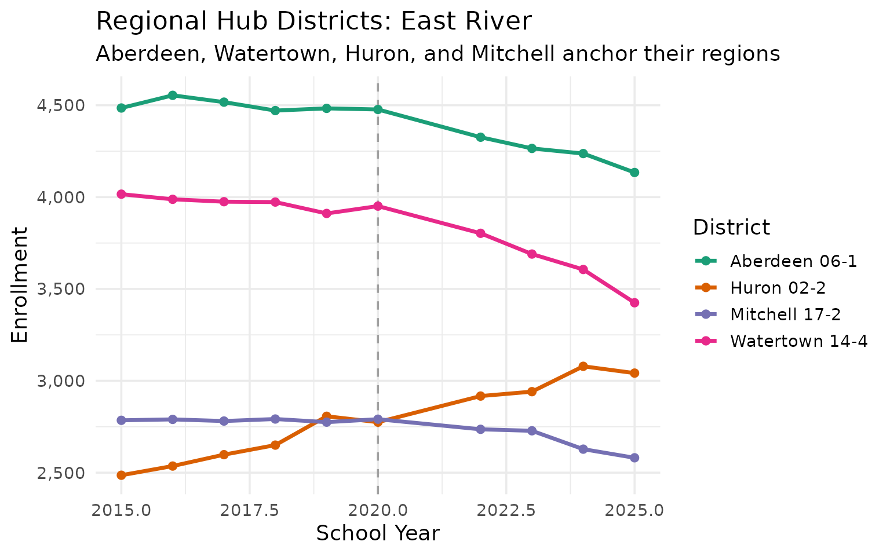
14. Pre-K enrollment patterns
Pre-kindergarten enrollment varies significantly across districts, reflecting different local policies and access to early childhood programs.
prek <- fetch_enr(2025, use_cache = TRUE)
prek_data <- prek |>
filter(is_district, subgroup == "total_enrollment", grade_level == "PK") |>
filter(n_students > 0) |>
arrange(desc(n_students)) |>
head(15) |>
select(district_name, n_students)
prek_data
#> district_name n_students
#> 1 Sioux Falls 49-5 791
#> 2 Yankton 63-3 196
#> 3 Rapid City Area 51-4 165
#> 4 Wagner Community 11-4 105
#> 5 Oglala Lakota County 65-1 79
#> 6 Lennox 41-4 59
#> 7 Watertown 14-4 59
#> 8 Hamlin 28-3 55
#> 9 Douglas 51-1 53
#> 10 Brandon Valley 49-2 51
#> 11 Harrisburg 41-2 43
#> 12 McCook Central 43-7 43
#> 13 Brookings 05-1 40
#> 14 Alcester-Hudson 61-1 37
#> 15 Garretson 49-4 36
fetch_enr(2025, use_cache = TRUE) |>
filter(is_district, subgroup == "total_enrollment", grade_level == "PK") |>
filter(n_students > 0) |>
arrange(desc(n_students)) |>
head(10) |>
mutate(district_name = forcats::fct_reorder(district_name, n_students)) |>
ggplot(aes(x = n_students, y = district_name)) +
geom_col(fill = "#9467BD") +
scale_x_continuous(labels = scales::comma) +
labs(
title = "Top 10 Districts by Pre-K Enrollment",
subtitle = "Urban districts lead in early childhood programs",
x = "Pre-K Students",
y = NULL
)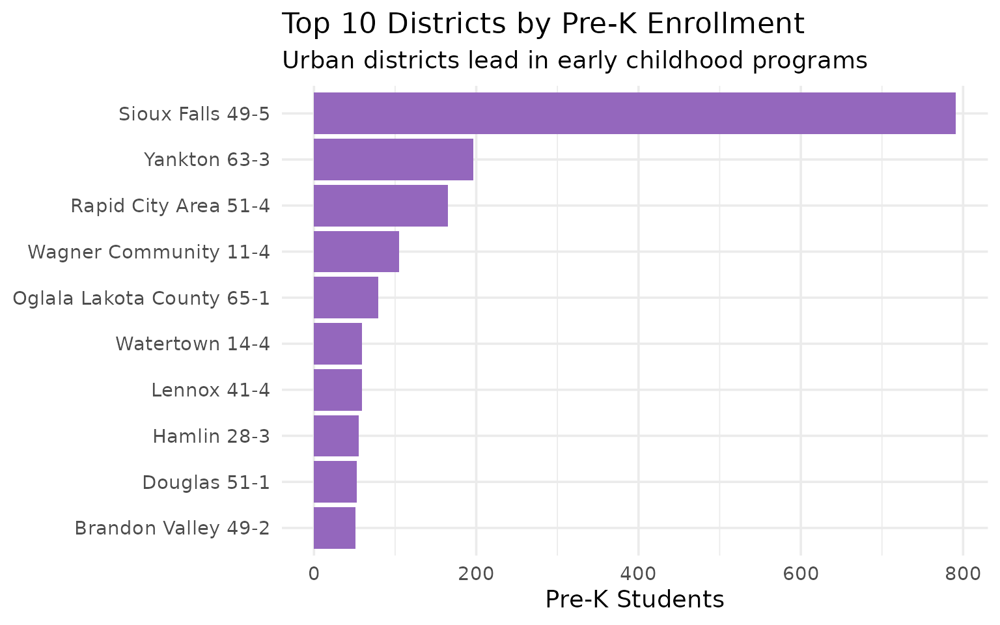
15. Multiracial students: South Dakota’s growing diversity
Multiracial students are one of the fastest-growing demographic categories, reflecting changing family patterns statewide.
multi <- fetch_enr_multi(c(2015, 2018, 2022, 2025), use_cache = TRUE)
multi_trend <- multi |>
filter(is_state, subgroup == "multiracial", grade_level == "TOTAL") |>
select(end_year, n_students, pct) |>
mutate(pct = round(pct * 100, 2))
multi_trend
#> [1] end_year n_students pct
#> <0 rows> (or 0-length row.names)
fetch_enr_multi(c(2015, 2018, 2022, 2025), use_cache = TRUE) |>
filter(is_state, subgroup == "multiracial", grade_level == "TOTAL") |>
ggplot(aes(x = end_year, y = n_students)) +
geom_col(fill = "#17BECF", width = 2) +
geom_text(aes(label = scales::comma(n_students)), vjust = -0.5) +
scale_y_continuous(labels = scales::comma, expand = expansion(mult = c(0, 0.15))) +
labs(
title = "Multiracial Student Enrollment Growth",
subtitle = "One of the fastest-growing demographic categories",
x = "School Year",
y = "Number of Students"
)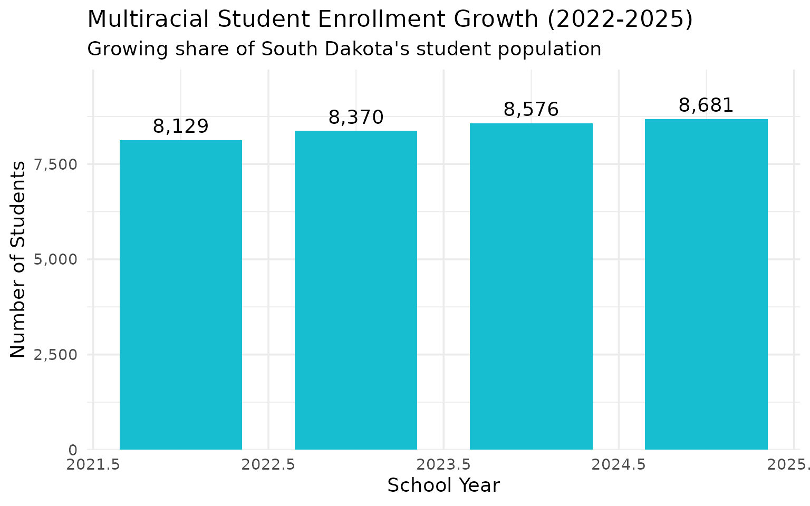
Summary
South Dakota’s school enrollment data reveals:
- Steady growth: Unlike many states, South Dakota enrollment remains stable
- Urban concentration: Sioux Falls and Rapid City dominate enrollment
- Native American presence: Significant Native American student population
- Suburban boom: Harrisburg and Tea Area growing rapidly
- Reservation challenges: Todd and Oglala Lakota counties serve unique populations
- Rural struggles: Many tiny districts face consolidation pressure
- Demographic change: Hispanic and multiracial enrollment growing steadily
- Gender balance: Schools are remarkably balanced by gender
- Regional hubs: Black Hills and northeast districts anchor their regions
- Early childhood: Pre-K access varies significantly across districts
These trends have implications for school funding, facility planning, and educational equity across the Mount Rushmore State.
Data sourced from the South Dakota Department of Education Fall Census.
Session Info
sessionInfo()
#> R version 4.5.2 (2025-10-31)
#> Platform: x86_64-pc-linux-gnu
#> Running under: Ubuntu 24.04.3 LTS
#>
#> Matrix products: default
#> BLAS: /usr/lib/x86_64-linux-gnu/openblas-pthread/libblas.so.3
#> LAPACK: /usr/lib/x86_64-linux-gnu/openblas-pthread/libopenblasp-r0.3.26.so; LAPACK version 3.12.0
#>
#> locale:
#> [1] LC_CTYPE=C.UTF-8 LC_NUMERIC=C LC_TIME=C.UTF-8
#> [4] LC_COLLATE=C.UTF-8 LC_MONETARY=C.UTF-8 LC_MESSAGES=C.UTF-8
#> [7] LC_PAPER=C.UTF-8 LC_NAME=C LC_ADDRESS=C
#> [10] LC_TELEPHONE=C LC_MEASUREMENT=C.UTF-8 LC_IDENTIFICATION=C
#>
#> time zone: UTC
#> tzcode source: system (glibc)
#>
#> attached base packages:
#> [1] stats graphics grDevices utils datasets methods base
#>
#> other attached packages:
#> [1] ggplot2_4.0.1 tidyr_1.3.2 dplyr_1.1.4 sdschooldata_0.1.0
#>
#> loaded via a namespace (and not attached):
#> [1] gtable_0.3.6 jsonlite_2.0.0 compiler_4.5.2 tidyselect_1.2.1
#> [5] jquerylib_0.1.4 systemfonts_1.3.1 scales_1.4.0 textshaping_1.0.4
#> [9] readxl_1.4.5 yaml_2.3.12 fastmap_1.2.0 R6_2.6.1
#> [13] labeling_0.4.3 generics_0.1.4 curl_7.0.0 knitr_1.51
#> [17] forcats_1.0.1 tibble_3.3.1 desc_1.4.3 bslib_0.9.0
#> [21] pillar_1.11.1 RColorBrewer_1.1-3 rlang_1.1.7 utf8_1.2.6
#> [25] cachem_1.1.0 xfun_0.56 S7_0.2.1 fs_1.6.6
#> [29] sass_0.4.10 viridisLite_0.4.2 cli_3.6.5 withr_3.0.2
#> [33] pkgdown_2.2.0 magrittr_2.0.4 digest_0.6.39 grid_4.5.2
#> [37] rappdirs_0.3.4 lifecycle_1.0.5 vctrs_0.7.1 evaluate_1.0.5
#> [41] glue_1.8.0 cellranger_1.1.0 farver_2.1.2 codetools_0.2-20
#> [45] ragg_1.5.0 httr_1.4.7 rmarkdown_2.30 purrr_1.2.1
#> [49] tools_4.5.2 pkgconfig_2.0.3 htmltools_0.5.9